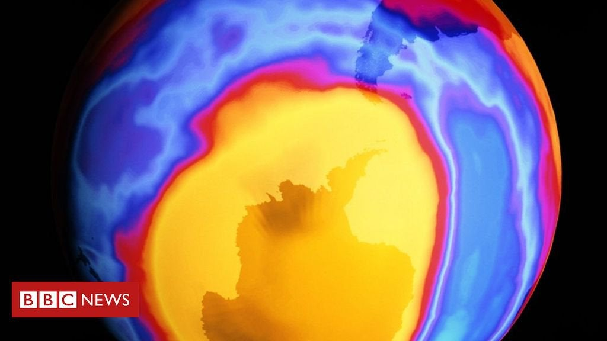
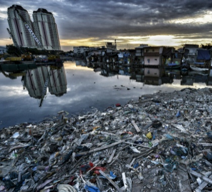

places must visit

Disneyland-Paris
I had visited disneyland in Oct 2019
Disneyland Paris, formerly Euro Disney Resort, is an entertainment resort in Chessy, France, a town located 32 km east of the centre of Paris. It encompasses two theme parks, many resort hotels, Disney Nature Resorts, a shopping, dining, and entertainment complex, and a golf course, in addition to several additional recreational and entertainment venues. Disneyland Park is the original theme park of the complex, opening with the resort on 12 April 1992. A second theme park, Walt Disney Studios Park, opened in 2002, 10 years after the original park's opening. Disneyland Paris celebrated its 25th anniversary in 2017. Within 25 years of opening, 320 million people visited Disneyland Paris, making it the most visited theme park in Europe.The Parisian resort is the second Disney park to open outside the United States following the opening of the Tokyo Disney Resort in 1983 and is the largest Disney resort to open outside of the United States. Disneyland Paris is also the only Disney resort outside of the United States to be completely owned by The Walt Disney Company.

Eiffel Tower-Paris
I had visited disneyland in Oct 2019
Disneyland Paris, formerly Euro Disney Resort, is an entertainment resort in Chessy, France, a The Eiffel Tower is a wrought-iron lattice tower on the Champ de Mars in Paris, France. It is named after the engineer Gustave Eiffel, whose company designed and built the tower.Locally nicknamed "La dame de fer" (French for "Iron Lady"), it was constructed from 1887 to 1889 as the centerpiece of the 1889 World's Fair and was initially criticized by some of France's leading artists and intellectuals for its design, but it has become a global cultural icon of France and one of the most recognizable structures in the world.The Eiffel Tower is the most visited monument with an entrance fee in the world; 6.91 million people ascended it in 2015. The Tower was made a Monument historique in 1964 and named part of UNESCO World Heritage Site ("Paris, Banks of the Seins") in 1991.the Eiffel Tower is the second tallest free-standing structure in France after the Millau Viaduct.The tower has three levels for visitors, with restaurants on the first and second levels.
reviou on movies

Excellent film to culminate MCU ride
I saw it with my parents and they loved it.Not a bad adaptation of the Roald Dahl book, but when the Nic Roeg film exists then this one doesn't need to. The setting is swapped to America, worse luck, and things feel different for the first third. Once we move to the hotel, however, this becomes a lesser, almost shot-for-shot reprise of the Roeg movie but of a much lesser quality; the only notable thing is that the original book ending is kept. The kids are okay here, the CGI is average, but the adult actors fail to give convincing performances, and Anne Hathaway in particular is hammily horrible.
Excellent film to culminate MCU ride
I saw it with my parents and they loved it.Not a bad adaptation of the Roald Dahl book, but when the Nic Roeg film exists then this one doesn't need to. The setting is swapped to America, worse luck, and things feel different for the first third. Once we move to the hotel, however, this becomes a lesser, almost shot-for-shot reprise of the Roeg movie but of a much lesser quality; the only notable thing is that the original book ending is kept. The kids are okay here, the CGI is average, but the adult actors fail to give convincing performances, and Anne Hathaway in particular is hammily horrible.
News about the enviorment
-
The ozone layer is healing
It was one of the key environmental causes of the 1980s: trying to prevent the hole in the ozone layer, which protects the planet from harmful UV rays, from getting any larger. Activists mobilised street protests and politicians held summits. And change is happening, according to a recent study by the US National Center for Atmospheric Research (NCAR): Because of the 1987 Montreal Protocol, a global deal to regulate nearly 100 man-made chemicals that deplete the ozone layer, 443 million Americans will likely be spared from skin cancer through the end of this century.The hole in the ozone layer remains enormous – about the size of North America – but it is recovering at a rate of one to three percent every 10 years, according to the UN. The hole over parts of the northern hemisphere is expected to heal completely by the 2030s, with full repair over the southern hemisphere and polar regions expected by the 2060s, according to UN data. Global action on the problem via the Montreal Protocol has prevented more than 99 percent of potential health effects that would have otherwise occurred from ozone destruction, NCAR reported.
-
Indonesia's sinking, polluted capital is moving to new city
JAKARTA: Jakarta is congested, polluted, prone to earthquakes and rapidly sinking into the Java Sea. Now the government is leaving, and moving the country's capital to the island of Borneo. President Joko Widodo envisions the construction of a new capital as a panacea for the problems plaguing Jakarta, reducing its population while allowing the country to start fresh with a "sustainable city" that has good public transportation, is integrated with its natural environment and is in an area that's not prone to natural disasters. "The construction of the new capital city is not merely a physical move of government offices," Widodo said last week ahead of parliament's approval of the plan. "The main goal is to build a smart new city, a new city that is competitive at the global level, to build a new locomotive for the transformation toward an Indonesia based on innovation and technology based on a green economy."
Books must read
Bill gates
Reading is still the main way that i both learn new things and test my understanding.
List of books
Ghost Stories Of Shimla Hills
.jpg)